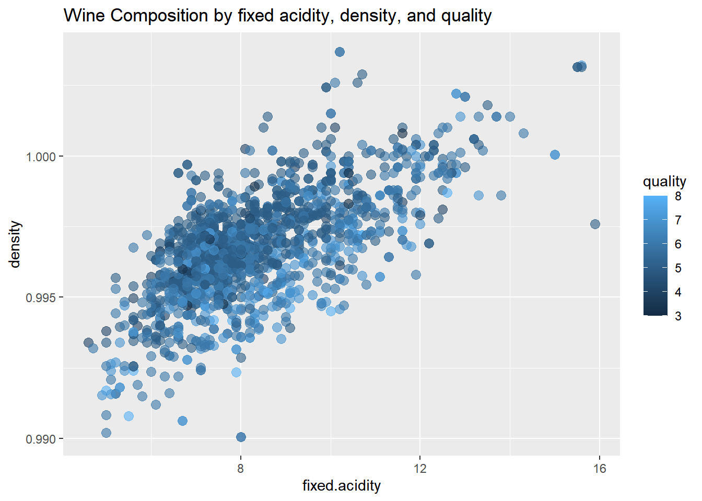

Chapter 5 Descriptive Statistics
5.1 The Data
We have taken a data-set from Kaggle: https://www.kaggle.com/uciml/red-wine-quality-cortez-et-al-2009 This data-set inlcudes the measurements from the wine along with its quality rating.
df<-read.table("data/winequality-red.csv",stringsAsFactors = FALSE,
sep=",",header = TRUE)
head(df)## fixed.acidity volatile.acidity citric.acid residual.sugar chlorides free.sulfur.dioxide total.sulfur.dioxide density pH sulphates alcohol
## 1 7.4 0.70 0.00 1.9 0.076 11 34 0.9978 3.51 0.56 9.4
## 2 7.8 0.88 0.00 2.6 0.098 25 67 0.9968 3.20 0.68 9.8
## 3 7.8 0.76 0.04 2.3 0.092 15 54 0.9970 3.26 0.65 9.8
## 4 11.2 0.28 0.56 1.9 0.075 17 60 0.9980 3.16 0.58 9.8
## 5 7.4 0.70 0.00 1.9 0.076 11 34 0.9978 3.51 0.56 9.4
## 6 7.4 0.66 0.00 1.8 0.075 13 40 0.9978 3.51 0.56 9.4
## quality
## 1 5
## 2 5
## 3 5
## 4 6
## 5 5
## 6 55.2 Data Exploration and Descr Statistics
stat.desc(df)## fixed.acidity volatile.acidity citric.acid residual.sugar chlorides free.sulfur.dioxide total.sulfur.dioxide density
## nbr.val 1.599000e+03 1.599000e+03 1.599000e+03 1.599000e+03 1.599000e+03 1.599000e+03 1.599000e+03 1.599000e+03
## nbr.null 0.000000e+00 0.000000e+00 1.320000e+02 0.000000e+00 0.000000e+00 0.000000e+00 0.000000e+00 0.000000e+00
## nbr.na 0.000000e+00 0.000000e+00 0.000000e+00 0.000000e+00 0.000000e+00 0.000000e+00 0.000000e+00 0.000000e+00
## min 4.600000e+00 1.200000e-01 0.000000e+00 9.000000e-01 1.200000e-02 1.000000e+00 6.000000e+00 9.900700e-01
## max 1.590000e+01 1.580000e+00 1.000000e+00 1.550000e+01 6.110000e-01 7.200000e+01 2.890000e+02 1.003690e+00
## range 1.130000e+01 1.460000e+00 1.000000e+00 1.460000e+01 5.990000e-01 7.100000e+01 2.830000e+02 1.362000e-02
## sum 1.330310e+04 8.439850e+02 4.332900e+02 4.059550e+03 1.398590e+02 2.538400e+04 7.430200e+04 1.593798e+03
## median 7.900000e+00 5.200000e-01 2.600000e-01 2.200000e+00 7.900000e-02 1.400000e+01 3.800000e+01 9.967500e-01
## mean 8.319637e+00 5.278205e-01 2.709756e-01 2.538806e+00 8.746654e-02 1.587492e+01 4.646779e+01 9.967467e-01
## SE.mean 4.354102e-02 4.477892e-03 4.871551e-03 3.525922e-02 1.177000e-03 2.615857e-01 8.226402e-01 4.719810e-05
## CI.mean.0.95 8.540351e-02 8.783160e-03 9.555302e-03 6.915919e-02 2.308627e-03 5.130871e-01 1.613567e+00 9.257670e-05
## var 3.031416e+00 3.206238e-02 3.794748e-02 1.987897e+00 2.215143e-03 1.094149e+02 1.082102e+03 3.562029e-06
## std.dev 1.741096e+00 1.790597e-01 1.948011e-01 1.409928e+00 4.706530e-02 1.046016e+01 3.289532e+01 1.887334e-03
## coef.var 2.092755e-01 3.392435e-01 7.188881e-01 5.553510e-01 5.380949e-01 6.589108e-01 7.079167e-01 1.893494e-03
## pH sulphates alcohol quality
## nbr.val 1.599000e+03 1.599000e+03 1.599000e+03 1.599000e+03
## nbr.null 0.000000e+00 0.000000e+00 0.000000e+00 0.000000e+00
## nbr.na 0.000000e+00 0.000000e+00 0.000000e+00 0.000000e+00
## min 2.740000e+00 3.300000e-01 8.400000e+00 3.000000e+00
## max 4.010000e+00 2.000000e+00 1.490000e+01 8.000000e+00
## range 1.270000e+00 1.670000e+00 6.500000e+00 5.000000e+00
## sum 5.294470e+03 1.052380e+03 1.666635e+04 9.012000e+03
## median 3.310000e+00 6.200000e-01 1.020000e+01 6.000000e+00
## mean 3.311113e+00 6.581488e-01 1.042298e+01 5.636023e+00
## SE.mean 3.860868e-03 4.238999e-03 2.665002e-02 2.019555e-02
## CI.mean.0.95 7.572899e-03 8.314584e-03 5.227267e-02 3.961255e-02
## var 2.383518e-02 2.873262e-02 1.135647e+00 6.521684e-01
## std.dev 1.543865e-01 1.695070e-01 1.065668e+00 8.075694e-01
## coef.var 4.662676e-02 2.575511e-01 1.022421e-01 1.432871e-015.3 Univariate Exploration
5.4 Bivariate Exploration
5.5 Multivariate Exploration
Correlations between the variables
# ++++++++++++++++++++++++++++
# flattenCorrMatrix
# ++++++++++++++++++++++++++++
# cormat : matrix of the correlation coefficients
# pmat : matrix of the correlation p-values
flattenCorrMatrix <- function(cormat, pmat) {
ut <- upper.tri(cormat)
data.frame(
row = rownames(cormat)[row(cormat)[ut]],
column = rownames(cormat)[col(cormat)[ut]],
cor =(cormat)[ut],
p = pmat[ut]
)
}
res2 <- rcorr(as.matrix(df))
cor.m <- flattenCorrMatrix(res2$r, res2$P)
cor.m[order(cor.m[,3],decreasing=TRUE),]## row column cor p
## 2 fixed.acidity citric.acid 0.671703435 0.000000e+00
## 22 fixed.acidity density 0.668047292 0.000000e+00
## 21 free.sulfur.dioxide total.sulfur.dioxide 0.667666450 0.000000e+00
## 66 alcohol quality 0.476166324 0.000000e+00
## 41 chlorides sulphates 0.371260481 0.000000e+00
## 24 citric.acid density 0.364947175 0.000000e+00
## 25 residual.sugar density 0.355283371 0.000000e+00
## 39 citric.acid sulphates 0.312770044 0.000000e+00
## 65 sulphates quality 0.251397079 0.000000e+00
## 30 volatile.acidity pH 0.234937294 0.000000e+00
## 58 citric.acid quality 0.226372514 0.000000e+00
## 54 pH alcohol 0.205632509 0.000000e+00
## 9 citric.acid chlorides 0.203822914 2.220446e-16
## 19 residual.sugar total.sulfur.dioxide 0.203027882 2.220446e-16
## 26 chlorides density 0.200632327 4.440892e-16
## 14 residual.sugar free.sulfur.dioxide 0.187048995 4.685141e-14
## 37 fixed.acidity sulphates 0.183005664 1.647571e-13
## 44 density sulphates 0.148506412 2.418474e-09
## 6 citric.acid residual.sugar 0.143577162 8.083723e-09
## 56 fixed.acidity quality 0.124051649 6.495635e-07
## 4 fixed.acidity residual.sugar 0.114776724 4.199465e-06
## 48 citric.acid alcohol 0.109903247 1.059462e-05
## 7 fixed.acidity chlorides 0.093705186 1.751746e-04
## 55 sulphates alcohol 0.093594750 1.783053e-04
## 17 volatile.acidity total.sulfur.dioxide 0.076470005 2.213857e-03
## 28 total.sulfur.dioxide density 0.071269476 4.354284e-03
## 34 free.sulfur.dioxide pH 0.070377499 4.869975e-03
## 8 volatile.acidity chlorides 0.061297772 1.422491e-02
## 10 residual.sugar chlorides 0.055609535 2.617079e-02
## 42 free.sulfur.dioxide sulphates 0.051657572 3.888321e-02
## 20 chlorides total.sulfur.dioxide 0.047400468 5.809120e-02
## 43 total.sulfur.dioxide sulphates 0.042946836 8.601835e-02
## 49 residual.sugar alcohol 0.042075437 9.258425e-02
## 18 citric.acid total.sulfur.dioxide 0.035533024 1.555454e-01
## 23 volatile.acidity density 0.022026232 3.787554e-01
## 59 residual.sugar quality 0.013731637 5.832180e-01
## 15 chlorides free.sulfur.dioxide 0.005562147 8.241238e-01
## 40 residual.sugar sulphates 0.005527121 8.252134e-01
## 5 volatile.acidity residual.sugar 0.001917882 9.389168e-01
## 12 volatile.acidity free.sulfur.dioxide -0.010503827 6.747011e-01
## 27 free.sulfur.dioxide density -0.021945831 3.804985e-01
## 61 free.sulfur.dioxide quality -0.050656057 4.283398e-02
## 64 pH quality -0.057731391 2.096278e-02
## 13 citric.acid free.sulfur.dioxide -0.060978129 1.473916e-02
## 46 fixed.acidity alcohol -0.061668271 1.364868e-02
## 35 total.sulfur.dioxide pH -0.066494559 7.818341e-03
## 51 free.sulfur.dioxide alcohol -0.069408354 5.492314e-03
## 32 residual.sugar pH -0.085652422 6.065915e-04
## 16 fixed.acidity total.sulfur.dioxide -0.113181443 5.709033e-06
## 60 chlorides quality -0.128906560 2.313383e-07
## 11 fixed.acidity free.sulfur.dioxide -0.153794193 6.335581e-10
## 63 density quality -0.174919228 1.874945e-12
## 62 total.sulfur.dioxide quality -0.185100289 8.615331e-14
## 45 pH sulphates -0.196647602 2.220446e-15
## 47 volatile.acidity alcohol -0.202288027 4.440892e-16
## 52 total.sulfur.dioxide alcohol -0.205653944 0.000000e+00
## 50 chlorides alcohol -0.221140545 0.000000e+00
## 1 fixed.acidity volatile.acidity -0.256130895 0.000000e+00
## 38 volatile.acidity sulphates -0.260986685 0.000000e+00
## 33 chlorides pH -0.265026131 0.000000e+00
## 36 density pH -0.341699335 0.000000e+00
## 57 volatile.acidity quality -0.390557780 0.000000e+00
## 53 density alcohol -0.496179770 0.000000e+00
## 31 citric.acid pH -0.541904145 0.000000e+00
## 3 volatile.acidity citric.acid -0.552495685 0.000000e+00
## 29 fixed.acidity pH -0.682978195 0.000000e+005.5.1 Visualize Correlations
# Insignificant correlations are leaved blank
corrplot(res2$r, type="upper", order="hclust",
p.mat = res2$P, sig.level = 0.01, insig = "blank")#Visualization of a Correlation Matrix. On top the (absolute) value of the correlation plus the result of the cor.test as stars. On bottom, the bivariate scatterplots, with a fitted line
chart.Correlation(df, histogram=TRUE, pch=19)ggplot(df,
aes(x = fixed.acidity,
y = pH,
color = quality)) +
geom_point(size = 3,
alpha = .6) +
labs(title = "Wine Composition by fixed acidity, citric acid, and quality")ggplot(df,
aes(x = fixed.acidity,
y = density,
color = quality)) +
geom_point(size = 3,
alpha = .6) +
labs(title = "Wine Composition by fixed acidity, density, and quality")
5.6 Load Data
We have taken a data-set from Kaggle: https://www.kaggle.com/uciml/red-wine-quality-cortez-et-al-2009 This data-set inlcudes the measurements from the wine along with its quality rating.
wine<-read.table("data/winequality-red.csv",stringsAsFactors = FALSE,
sep=",",header = TRUE)
glimpse(wine)## Rows: 1,599
## Columns: 12
## $ fixed.acidity <dbl> 7.4, 7.8, 7.8, 11.2, 7.4, 7.4, 7.9, 7.3, 7.8, 7.5, 6.7, 7.5, 5.6, 7.8, 8.9, 8.9, 8.5, 8.1, 7.4, 7.9, 8.9, 7.6, 7.9, ~
## $ volatile.acidity <dbl> 0.700, 0.880, 0.760, 0.280, 0.700, 0.660, 0.600, 0.650, 0.580, 0.500, 0.580, 0.500, 0.615, 0.610, 0.620, 0.620, 0.28~
## $ citric.acid <dbl> 0.00, 0.00, 0.04, 0.56, 0.00, 0.00, 0.06, 0.00, 0.02, 0.36, 0.08, 0.36, 0.00, 0.29, 0.18, 0.19, 0.56, 0.28, 0.08, 0.~
## $ residual.sugar <dbl> 1.9, 2.6, 2.3, 1.9, 1.9, 1.8, 1.6, 1.2, 2.0, 6.1, 1.8, 6.1, 1.6, 1.6, 3.8, 3.9, 1.8, 1.7, 4.4, 1.8, 1.8, 2.3, 1.6, 2~
## $ chlorides <dbl> 0.076, 0.098, 0.092, 0.075, 0.076, 0.075, 0.069, 0.065, 0.073, 0.071, 0.097, 0.071, 0.089, 0.114, 0.176, 0.170, 0.09~
## $ free.sulfur.dioxide <dbl> 11, 25, 15, 17, 11, 13, 15, 15, 9, 17, 15, 17, 16, 9, 52, 51, 35, 16, 6, 17, 29, 23, 10, 9, 21, 11, 4, 10, 14, 8, 17~
## $ total.sulfur.dioxide <dbl> 34, 67, 54, 60, 34, 40, 59, 21, 18, 102, 65, 102, 59, 29, 145, 148, 103, 56, 29, 56, 60, 71, 37, 67, 40, 23, 11, 37,~
## $ density <dbl> 0.9978, 0.9968, 0.9970, 0.9980, 0.9978, 0.9978, 0.9964, 0.9946, 0.9968, 0.9978, 0.9959, 0.9978, 0.9943, 0.9974, 0.99~
## $ pH <dbl> 3.51, 3.20, 3.26, 3.16, 3.51, 3.51, 3.30, 3.39, 3.36, 3.35, 3.28, 3.35, 3.58, 3.26, 3.16, 3.17, 3.30, 3.11, 3.38, 3.~
## $ sulphates <dbl> 0.56, 0.68, 0.65, 0.58, 0.56, 0.56, 0.46, 0.47, 0.57, 0.80, 0.54, 0.80, 0.52, 1.56, 0.88, 0.93, 0.75, 1.28, 0.50, 1.~
## $ alcohol <dbl> 9.4, 9.8, 9.8, 9.8, 9.4, 9.4, 9.4, 10.0, 9.5, 10.5, 9.2, 10.5, 9.9, 9.1, 9.2, 9.2, 10.5, 9.3, 9.0, 9.2, 9.4, 9.7, 9.~
## $ quality <int> 5, 5, 5, 6, 5, 5, 5, 7, 7, 5, 5, 5, 5, 5, 5, 5, 7, 5, 4, 6, 6, 5, 5, 5, 6, 5, 5, 5, 5, 6, 5, 6, 5, 6, 5, 6, 6, 7, 4,~5.7 Process Reference
The process was followed from this site: https://www.pluralsight.com/guides/linear-lasso-and-ridge-regression-with-r
5.8 Data Partitioning
The below code takes 70% of the data for training and 30% of the code for testing.
set.seed(100)
index = sample(1:nrow(wine), 0.7*nrow(wine))
train = wine[index,] # Create the training data
test = wine[-index,] # Create the test data
dim(train)## [1] 1119 12dim(test)## [1] 480 125.9 Scaling the Numeric Features
cols <- colnames(wine)
pre_proc_val <- preProcess(train[,cols], method = c("center", "scale"))
train[,cols] = predict(pre_proc_val, train[,cols])
test[,cols] = predict(pre_proc_val, test[,cols])
summary(train)## fixed.acidity volatile.acidity citric.acid residual.sugar chlorides free.sulfur.dioxide total.sulfur.dioxide
## Min. :-2.0802 Min. :-2.26583 Min. :-1.37809 Min. :-1.18596 Min. :-1.58727 Min. :-1.4109 Min. :-1.2446
## 1st Qu.:-0.6928 1st Qu.:-0.76458 1st Qu.:-0.92192 1st Qu.:-0.45565 1st Qu.:-0.36546 1st Qu.:-0.8446 1st Qu.:-0.7471
## Median :-0.2304 Median :-0.04176 Median :-0.06029 Median :-0.23655 Median :-0.15480 Median :-0.1840 Median :-0.2496
## Mean : 0.0000 Mean : 0.00000 Mean : 0.00000 Mean : 0.00000 Mean : 0.00000 Mean : 0.0000 Mean : 0.0000
## 3rd Qu.: 0.5790 3rd Qu.: 0.62546 3rd Qu.: 0.80135 3rd Qu.: 0.05557 3rd Qu.: 0.05586 3rd Qu.: 0.5710 3rd Qu.: 0.4656
## Max. : 4.1630 Max. : 5.85201 Max. : 3.69037 Max. : 9.47663 Max. :11.03109 Max. : 5.2899 Max. : 7.5552
## density pH sulphates alcohol quality
## Min. :-3.57012 Min. :-3.68218 Min. :-1.8820 Min. :-1.9054 Min. :-3.3046
## 1st Qu.:-0.61381 1st Qu.:-0.66652 1st Qu.:-0.6199 1st Qu.:-0.8694 1st Qu.:-0.7831
## Median :-0.01507 Median :-0.02489 Median :-0.2183 Median :-0.2101 Median : 0.4777
## Mean : 0.00000 Mean : 0.00000 Mean : 0.0000 Mean : 0.0000 Mean : 0.0000
## 3rd Qu.: 0.57566 3rd Qu.: 0.55258 3rd Qu.: 0.4127 3rd Qu.: 0.5747 3rd Qu.: 0.4777
## Max. : 3.71106 Max. : 4.46653 Max. : 7.6982 Max. : 3.3687 Max. : 2.99935.10 Linear Regression
5.10.1 What is it?
The simplest form of regression is linear regression, which assumes that the predictors have a linear relationship with the target variable. ### Assumptions * Input is assumed to have a Normal distribution and are not correlated with each other.
We saw in the Descriptive Stats section that this was not the case
With these assumptions being true we can model quality witht the following equation.
\[ q = a_1x_1 + a_2x_2 + a_3x_3 + \dots + a_2nx_n + b\] Where \(a_1, a_2, \dots, a_n\) are coefficients from the model. \(x_1, x_2, \dots, x_n\) are the input variables to the model. \(b\) is a factor of the model and \(q\) is equal to the quality output.
5.10.2 Single Variable
In the code-block below we output the summary of just the measurement alchol into the linear model.
summary(lm(quality~alcohol, data = train))##
## Call:
## lm(formula = quality ~ alcohol, data = train)
##
## Residuals:
## Min 1Q Median 3Q Max
## -3.5773 -0.4885 -0.2049 0.6305 3.2938
##
## Coefficients:
## Estimate Std. Error t value Pr(>|t|)
## (Intercept) 5.845e-16 2.587e-02 0.0 1
## alcohol 5.019e-01 2.588e-02 19.4 <2e-16 ***
## ---
## Signif. codes: 0 '***' 0.001 '**' 0.01 '*' 0.05 '.' 0.1 ' ' 1
##
## Residual standard error: 0.8653 on 1117 degrees of freedom
## Multiple R-squared: 0.252, Adjusted R-squared: 0.2513
## F-statistic: 376.2 on 1 and 1117 DF, p-value: < 2.2e-16Focusing on the p-value above we can tell that it is unlikely that by chance we will observe a relationship between alcohol and quality.
5.10.3 Multiple Variables
In the code block below we will input all of the variables and examine the output.
lr <- lm(quality~fixed.acidity + volatile.acidity + citric.acid + residual.sugar + chlorides + free.sulfur.dioxide + density + pH + sulphates + alcohol, data = train)
summary(lr)##
## Call:
## lm(formula = quality ~ fixed.acidity + volatile.acidity + citric.acid +
## residual.sugar + chlorides + free.sulfur.dioxide + density +
## pH + sulphates + alcohol, data = train)
##
## Residuals:
## Min 1Q Median 3Q Max
## -3.2099 -0.4497 -0.0791 0.5241 2.5651
##
## Coefficients:
## Estimate Std. Error t value Pr(>|t|)
## (Intercept) -1.898e-15 2.383e-02 0.000 1.00000
## fixed.acidity 1.248e-01 6.537e-02 1.910 0.05645 .
## volatile.acidity -2.657e-01 3.093e-02 -8.589 < 2e-16 ***
## citric.acid -9.537e-02 4.006e-02 -2.381 0.01744 *
## residual.sugar 5.473e-02 3.099e-02 1.766 0.07761 .
## chlorides -9.002e-02 2.936e-02 -3.066 0.00222 **
## free.sulfur.dioxide -4.450e-02 2.517e-02 -1.768 0.07737 .
## density -9.071e-02 5.979e-02 -1.517 0.12948
## pH -4.245e-02 4.281e-02 -0.992 0.32162
## sulphates 1.813e-01 2.888e-02 6.279 4.87e-10 ***
## alcohol 3.934e-01 4.120e-02 9.548 < 2e-16 ***
## ---
## Signif. codes: 0 '***' 0.001 '**' 0.01 '*' 0.05 '.' 0.1 ' ' 1
##
## Residual standard error: 0.7972 on 1108 degrees of freedom
## Multiple R-squared: 0.3701, Adjusted R-squared: 0.3644
## F-statistic: 65.1 on 10 and 1108 DF, p-value: < 2.2e-16Reviewing the output we find that the inputs: ‘volatile.acidity,’ ‘sulphates,’ and ‘alcohol.’
5.11 Regularization
Linear regression algorithm works by selecting coefficients for each independent variable that minimizes a loss function. However, if the coefficients are large, they can lead to over-fitting on the training dataset, and such a model will not generalize well on the unseen test data. To overcome this shortcoming, we’ll do regularization, which penalizes large coefficients. The following sections of the guide will discuss various regularization algorithms.
We will be using the glmnet() package to build the regularized regression models. The glmnet function does not work with dataframes, so we need to create a numeric matrix for the training features and a vector of target values.
The lines of code below perform the task of creating model matrix using the dummyVars function from the caret package. The predict function is then applied to create numeric model matrices for training and test.
dummies <- dummyVars(quality~., data = wine)
train_dummies = predict(dummies, newdata = train)
test_dummies = predict(dummies, newdata = test)
print(dim(train_dummies)); print(dim(test_dummies))## [1] 1119 11## [1] 480 115.12 Ridge Regression
Ridge regression is an extension of linear regression where the loss function is modified to minimize the complexity of the model. This modification is done by adding a penalty parameter that is equivalent to the square of the magnitude of the coefficients.
eval_results <- function(true, predicted, df) {
SSE <- sum((predicted - true)^2)
SST <- sum((true - mean(true))^2)
R_square <- 1 - SSE / SST
RMSE = sqrt(SSE/nrow(df))
# Model performance metrics
data.frame(
RMSE = RMSE,
Rsquare = R_square
)
}x = as.matrix(train_dummies)
y_train = train$quality
x_test = as.matrix(test_dummies)
y_test = test$unemploy
lambdas <- 10^seq(2, -3, by = -.1)
ridge_reg = glmnet(x, y_train, nlambda = 25, alpha = 0, family = 'gaussian', lambda = lambdas)
summary(ridge_reg)## Length Class Mode
## a0 51 -none- numeric
## beta 561 dgCMatrix S4
## df 51 -none- numeric
## dim 2 -none- numeric
## lambda 51 -none- numeric
## dev.ratio 51 -none- numeric
## nulldev 1 -none- numeric
## npasses 1 -none- numeric
## jerr 1 -none- numeric
## offset 1 -none- logical
## call 7 -none- call
## nobs 1 -none- numericcv_ridge <- cv.glmnet(x, y_train, alpha = 0, lambda = lambdas)
optimal_lambda <- cv_ridge$lambda.min
optimal_lambda## [1] 0.050118725.13 Lasso Regression
lambdas <- 10^seq(2, -3, by = -.1)
# Setting alpha = 1 implements lasso regression
lasso_reg <- cv.glmnet(x, y_train, alpha = 1, lambda = lambdas, standardize = TRUE, nfolds = 5)
# Best
lambda_best <- lasso_reg$lambda.min
lambda_best## [1] 0.001995262lasso_model <- glmnet(x, y_train, alpha = 1, lambda = lambda_best, standardize = TRUE)
predictions_train <- predict(lasso_model, s = lambda_best, newx = x)
eval_results(y_train, predictions_train, train)## RMSE Rsquare
## 1 0.7898025 0.3756541predictions_test <- predict(lasso_model, s = lambda_best, newx = x_test)
eval_results(y_test, predictions_test, test)## Warning in mean.default(true): argument is not numeric or logical: returning NA## RMSE Rsquare
## 1 0 NaN5.13.1 Features of the ‘glmnet’ Package
\(\lambda\) is defined once and \(\alpha\) where lasso is scaled by \(\alpha\) and ridge penalty is scaled by \((1-\alpha\)).
5.13.2 Elastic Net Regression
Elastic net regression combines the properties of ridge and lasso regression
# Set training control
train_cont <- trainControl(method = "repeatedcv",
number = 10,
repeats = 5,
search = "random",
verboseIter = TRUE)
# Train the model
elastic_reg <- train(quality ~ .,
data = train,
method = "glmnet",
preProcess = c("center", "scale"),
tuneLength = 10,
trControl = train_cont)## + Fold01.Rep1: alpha=0.4004, lambda=0.002439
## - Fold01.Rep1: alpha=0.4004, lambda=0.002439
## + Fold01.Rep1: alpha=0.1857, lambda=1.109010
## - Fold01.Rep1: alpha=0.1857, lambda=1.109010
## + Fold01.Rep1: alpha=0.9054, lambda=0.120703
## - Fold01.Rep1: alpha=0.9054, lambda=0.120703
## + Fold01.Rep1: alpha=0.5759, lambda=1.247636
## - Fold01.Rep1: alpha=0.5759, lambda=1.247636
## + Fold01.Rep1: alpha=0.2560, lambda=0.003753
## - Fold01.Rep1: alpha=0.2560, lambda=0.003753
## + Fold01.Rep1: alpha=0.7879, lambda=0.195914
## - Fold01.Rep1: alpha=0.7879, lambda=0.195914
## + Fold01.Rep1: alpha=0.4018, lambda=0.086926
## - Fold01.Rep1: alpha=0.4018, lambda=0.086926
## + Fold01.Rep1: alpha=0.1517, lambda=1.159105
## - Fold01.Rep1: alpha=0.1517, lambda=1.159105
## + Fold01.Rep1: alpha=0.3660, lambda=0.692297
## - Fold01.Rep1: alpha=0.3660, lambda=0.692297
## + Fold01.Rep1: alpha=0.2080, lambda=0.003654
## - Fold01.Rep1: alpha=0.2080, lambda=0.003654
## + Fold02.Rep1: alpha=0.4004, lambda=0.002439
## - Fold02.Rep1: alpha=0.4004, lambda=0.002439
## + Fold02.Rep1: alpha=0.1857, lambda=1.109010
## - Fold02.Rep1: alpha=0.1857, lambda=1.109010
## + Fold02.Rep1: alpha=0.9054, lambda=0.120703
## - Fold02.Rep1: alpha=0.9054, lambda=0.120703
## + Fold02.Rep1: alpha=0.5759, lambda=1.247636
## - Fold02.Rep1: alpha=0.5759, lambda=1.247636
## + Fold02.Rep1: alpha=0.2560, lambda=0.003753
## - Fold02.Rep1: alpha=0.2560, lambda=0.003753
## + Fold02.Rep1: alpha=0.7879, lambda=0.195914
## - Fold02.Rep1: alpha=0.7879, lambda=0.195914
## + Fold02.Rep1: alpha=0.4018, lambda=0.086926
## - Fold02.Rep1: alpha=0.4018, lambda=0.086926
## + Fold02.Rep1: alpha=0.1517, lambda=1.159105
## - Fold02.Rep1: alpha=0.1517, lambda=1.159105
## + Fold02.Rep1: alpha=0.3660, lambda=0.692297
## - Fold02.Rep1: alpha=0.3660, lambda=0.692297
## + Fold02.Rep1: alpha=0.2080, lambda=0.003654
## - Fold02.Rep1: alpha=0.2080, lambda=0.003654
## + Fold03.Rep1: alpha=0.4004, lambda=0.002439
## - Fold03.Rep1: alpha=0.4004, lambda=0.002439
## + Fold03.Rep1: alpha=0.1857, lambda=1.109010
## - Fold03.Rep1: alpha=0.1857, lambda=1.109010
## + Fold03.Rep1: alpha=0.9054, lambda=0.120703
## - Fold03.Rep1: alpha=0.9054, lambda=0.120703
## + Fold03.Rep1: alpha=0.5759, lambda=1.247636
## - Fold03.Rep1: alpha=0.5759, lambda=1.247636
## + Fold03.Rep1: alpha=0.2560, lambda=0.003753
## - Fold03.Rep1: alpha=0.2560, lambda=0.003753
## + Fold03.Rep1: alpha=0.7879, lambda=0.195914
## - Fold03.Rep1: alpha=0.7879, lambda=0.195914
## + Fold03.Rep1: alpha=0.4018, lambda=0.086926
## - Fold03.Rep1: alpha=0.4018, lambda=0.086926
## + Fold03.Rep1: alpha=0.1517, lambda=1.159105
## - Fold03.Rep1: alpha=0.1517, lambda=1.159105
## + Fold03.Rep1: alpha=0.3660, lambda=0.692297
## - Fold03.Rep1: alpha=0.3660, lambda=0.692297
## + Fold03.Rep1: alpha=0.2080, lambda=0.003654
## - Fold03.Rep1: alpha=0.2080, lambda=0.003654
## + Fold04.Rep1: alpha=0.4004, lambda=0.002439
## - Fold04.Rep1: alpha=0.4004, lambda=0.002439
## + Fold04.Rep1: alpha=0.1857, lambda=1.109010
## - Fold04.Rep1: alpha=0.1857, lambda=1.109010
## + Fold04.Rep1: alpha=0.9054, lambda=0.120703
## - Fold04.Rep1: alpha=0.9054, lambda=0.120703
## + Fold04.Rep1: alpha=0.5759, lambda=1.247636
## - Fold04.Rep1: alpha=0.5759, lambda=1.247636
## + Fold04.Rep1: alpha=0.2560, lambda=0.003753
## - Fold04.Rep1: alpha=0.2560, lambda=0.003753
## + Fold04.Rep1: alpha=0.7879, lambda=0.195914
## - Fold04.Rep1: alpha=0.7879, lambda=0.195914
## + Fold04.Rep1: alpha=0.4018, lambda=0.086926
## - Fold04.Rep1: alpha=0.4018, lambda=0.086926
## + Fold04.Rep1: alpha=0.1517, lambda=1.159105
## - Fold04.Rep1: alpha=0.1517, lambda=1.159105
## + Fold04.Rep1: alpha=0.3660, lambda=0.692297
## - Fold04.Rep1: alpha=0.3660, lambda=0.692297
## + Fold04.Rep1: alpha=0.2080, lambda=0.003654
## - Fold04.Rep1: alpha=0.2080, lambda=0.003654
## + Fold05.Rep1: alpha=0.4004, lambda=0.002439
## - Fold05.Rep1: alpha=0.4004, lambda=0.002439
## + Fold05.Rep1: alpha=0.1857, lambda=1.109010
## - Fold05.Rep1: alpha=0.1857, lambda=1.109010
## + Fold05.Rep1: alpha=0.9054, lambda=0.120703
## - Fold05.Rep1: alpha=0.9054, lambda=0.120703
## + Fold05.Rep1: alpha=0.5759, lambda=1.247636
## - Fold05.Rep1: alpha=0.5759, lambda=1.247636
## + Fold05.Rep1: alpha=0.2560, lambda=0.003753
## - Fold05.Rep1: alpha=0.2560, lambda=0.003753
## + Fold05.Rep1: alpha=0.7879, lambda=0.195914
## - Fold05.Rep1: alpha=0.7879, lambda=0.195914
## + Fold05.Rep1: alpha=0.4018, lambda=0.086926
## - Fold05.Rep1: alpha=0.4018, lambda=0.086926
## + Fold05.Rep1: alpha=0.1517, lambda=1.159105
## - Fold05.Rep1: alpha=0.1517, lambda=1.159105
## + Fold05.Rep1: alpha=0.3660, lambda=0.692297
## - Fold05.Rep1: alpha=0.3660, lambda=0.692297
## + Fold05.Rep1: alpha=0.2080, lambda=0.003654
## - Fold05.Rep1: alpha=0.2080, lambda=0.003654
## + Fold06.Rep1: alpha=0.4004, lambda=0.002439
## - Fold06.Rep1: alpha=0.4004, lambda=0.002439
## + Fold06.Rep1: alpha=0.1857, lambda=1.109010
## - Fold06.Rep1: alpha=0.1857, lambda=1.109010
## + Fold06.Rep1: alpha=0.9054, lambda=0.120703
## - Fold06.Rep1: alpha=0.9054, lambda=0.120703
## + Fold06.Rep1: alpha=0.5759, lambda=1.247636
## - Fold06.Rep1: alpha=0.5759, lambda=1.247636
## + Fold06.Rep1: alpha=0.2560, lambda=0.003753
## - Fold06.Rep1: alpha=0.2560, lambda=0.003753
## + Fold06.Rep1: alpha=0.7879, lambda=0.195914
## - Fold06.Rep1: alpha=0.7879, lambda=0.195914
## + Fold06.Rep1: alpha=0.4018, lambda=0.086926
## - Fold06.Rep1: alpha=0.4018, lambda=0.086926
## + Fold06.Rep1: alpha=0.1517, lambda=1.159105
## - Fold06.Rep1: alpha=0.1517, lambda=1.159105
## + Fold06.Rep1: alpha=0.3660, lambda=0.692297
## - Fold06.Rep1: alpha=0.3660, lambda=0.692297
## + Fold06.Rep1: alpha=0.2080, lambda=0.003654
## - Fold06.Rep1: alpha=0.2080, lambda=0.003654
## + Fold07.Rep1: alpha=0.4004, lambda=0.002439
## - Fold07.Rep1: alpha=0.4004, lambda=0.002439
## + Fold07.Rep1: alpha=0.1857, lambda=1.109010
## - Fold07.Rep1: alpha=0.1857, lambda=1.109010
## + Fold07.Rep1: alpha=0.9054, lambda=0.120703
## - Fold07.Rep1: alpha=0.9054, lambda=0.120703
## + Fold07.Rep1: alpha=0.5759, lambda=1.247636
## - Fold07.Rep1: alpha=0.5759, lambda=1.247636
## + Fold07.Rep1: alpha=0.2560, lambda=0.003753
## - Fold07.Rep1: alpha=0.2560, lambda=0.003753
## + Fold07.Rep1: alpha=0.7879, lambda=0.195914
## - Fold07.Rep1: alpha=0.7879, lambda=0.195914
## + Fold07.Rep1: alpha=0.4018, lambda=0.086926
## - Fold07.Rep1: alpha=0.4018, lambda=0.086926
## + Fold07.Rep1: alpha=0.1517, lambda=1.159105
## - Fold07.Rep1: alpha=0.1517, lambda=1.159105
## + Fold07.Rep1: alpha=0.3660, lambda=0.692297
## - Fold07.Rep1: alpha=0.3660, lambda=0.692297
## + Fold07.Rep1: alpha=0.2080, lambda=0.003654
## - Fold07.Rep1: alpha=0.2080, lambda=0.003654
## + Fold08.Rep1: alpha=0.4004, lambda=0.002439
## - Fold08.Rep1: alpha=0.4004, lambda=0.002439
## + Fold08.Rep1: alpha=0.1857, lambda=1.109010
## - Fold08.Rep1: alpha=0.1857, lambda=1.109010
## + Fold08.Rep1: alpha=0.9054, lambda=0.120703
## - Fold08.Rep1: alpha=0.9054, lambda=0.120703
## + Fold08.Rep1: alpha=0.5759, lambda=1.247636
## - Fold08.Rep1: alpha=0.5759, lambda=1.247636
## + Fold08.Rep1: alpha=0.2560, lambda=0.003753
## - Fold08.Rep1: alpha=0.2560, lambda=0.003753
## + Fold08.Rep1: alpha=0.7879, lambda=0.195914
## - Fold08.Rep1: alpha=0.7879, lambda=0.195914
## + Fold08.Rep1: alpha=0.4018, lambda=0.086926
## - Fold08.Rep1: alpha=0.4018, lambda=0.086926
## + Fold08.Rep1: alpha=0.1517, lambda=1.159105
## - Fold08.Rep1: alpha=0.1517, lambda=1.159105
## + Fold08.Rep1: alpha=0.3660, lambda=0.692297
## - Fold08.Rep1: alpha=0.3660, lambda=0.692297
## + Fold08.Rep1: alpha=0.2080, lambda=0.003654
## - Fold08.Rep1: alpha=0.2080, lambda=0.003654
## + Fold09.Rep1: alpha=0.4004, lambda=0.002439
## - Fold09.Rep1: alpha=0.4004, lambda=0.002439
## + Fold09.Rep1: alpha=0.1857, lambda=1.109010
## - Fold09.Rep1: alpha=0.1857, lambda=1.109010
## + Fold09.Rep1: alpha=0.9054, lambda=0.120703
## - Fold09.Rep1: alpha=0.9054, lambda=0.120703
## + Fold09.Rep1: alpha=0.5759, lambda=1.247636
## - Fold09.Rep1: alpha=0.5759, lambda=1.247636
## + Fold09.Rep1: alpha=0.2560, lambda=0.003753
## - Fold09.Rep1: alpha=0.2560, lambda=0.003753
## + Fold09.Rep1: alpha=0.7879, lambda=0.195914
## - Fold09.Rep1: alpha=0.7879, lambda=0.195914
## + Fold09.Rep1: alpha=0.4018, lambda=0.086926
## - Fold09.Rep1: alpha=0.4018, lambda=0.086926
## + Fold09.Rep1: alpha=0.1517, lambda=1.159105
## - Fold09.Rep1: alpha=0.1517, lambda=1.159105
## + Fold09.Rep1: alpha=0.3660, lambda=0.692297
## - Fold09.Rep1: alpha=0.3660, lambda=0.692297
## + Fold09.Rep1: alpha=0.2080, lambda=0.003654
## - Fold09.Rep1: alpha=0.2080, lambda=0.003654
## + Fold10.Rep1: alpha=0.4004, lambda=0.002439
## - Fold10.Rep1: alpha=0.4004, lambda=0.002439
## + Fold10.Rep1: alpha=0.1857, lambda=1.109010
## - Fold10.Rep1: alpha=0.1857, lambda=1.109010
## + Fold10.Rep1: alpha=0.9054, lambda=0.120703
## - Fold10.Rep1: alpha=0.9054, lambda=0.120703
## + Fold10.Rep1: alpha=0.5759, lambda=1.247636
## - Fold10.Rep1: alpha=0.5759, lambda=1.247636
## + Fold10.Rep1: alpha=0.2560, lambda=0.003753
## - Fold10.Rep1: alpha=0.2560, lambda=0.003753
## + Fold10.Rep1: alpha=0.7879, lambda=0.195914
## - Fold10.Rep1: alpha=0.7879, lambda=0.195914
## + Fold10.Rep1: alpha=0.4018, lambda=0.086926
## - Fold10.Rep1: alpha=0.4018, lambda=0.086926
## + Fold10.Rep1: alpha=0.1517, lambda=1.159105
## - Fold10.Rep1: alpha=0.1517, lambda=1.159105
## + Fold10.Rep1: alpha=0.3660, lambda=0.692297
## - Fold10.Rep1: alpha=0.3660, lambda=0.692297
## + Fold10.Rep1: alpha=0.2080, lambda=0.003654
## - Fold10.Rep1: alpha=0.2080, lambda=0.003654
## + Fold01.Rep2: alpha=0.4004, lambda=0.002439
## - Fold01.Rep2: alpha=0.4004, lambda=0.002439
## + Fold01.Rep2: alpha=0.1857, lambda=1.109010
## - Fold01.Rep2: alpha=0.1857, lambda=1.109010
## + Fold01.Rep2: alpha=0.9054, lambda=0.120703
## - Fold01.Rep2: alpha=0.9054, lambda=0.120703
## + Fold01.Rep2: alpha=0.5759, lambda=1.247636
## - Fold01.Rep2: alpha=0.5759, lambda=1.247636
## + Fold01.Rep2: alpha=0.2560, lambda=0.003753
## - Fold01.Rep2: alpha=0.2560, lambda=0.003753
## + Fold01.Rep2: alpha=0.7879, lambda=0.195914
## - Fold01.Rep2: alpha=0.7879, lambda=0.195914
## + Fold01.Rep2: alpha=0.4018, lambda=0.086926
## - Fold01.Rep2: alpha=0.4018, lambda=0.086926
## + Fold01.Rep2: alpha=0.1517, lambda=1.159105
## - Fold01.Rep2: alpha=0.1517, lambda=1.159105
## + Fold01.Rep2: alpha=0.3660, lambda=0.692297
## - Fold01.Rep2: alpha=0.3660, lambda=0.692297
## + Fold01.Rep2: alpha=0.2080, lambda=0.003654
## - Fold01.Rep2: alpha=0.2080, lambda=0.003654
## + Fold02.Rep2: alpha=0.4004, lambda=0.002439
## - Fold02.Rep2: alpha=0.4004, lambda=0.002439
## + Fold02.Rep2: alpha=0.1857, lambda=1.109010
## - Fold02.Rep2: alpha=0.1857, lambda=1.109010
## + Fold02.Rep2: alpha=0.9054, lambda=0.120703
## - Fold02.Rep2: alpha=0.9054, lambda=0.120703
## + Fold02.Rep2: alpha=0.5759, lambda=1.247636
## - Fold02.Rep2: alpha=0.5759, lambda=1.247636
## + Fold02.Rep2: alpha=0.2560, lambda=0.003753
## - Fold02.Rep2: alpha=0.2560, lambda=0.003753
## + Fold02.Rep2: alpha=0.7879, lambda=0.195914
## - Fold02.Rep2: alpha=0.7879, lambda=0.195914
## + Fold02.Rep2: alpha=0.4018, lambda=0.086926
## - Fold02.Rep2: alpha=0.4018, lambda=0.086926
## + Fold02.Rep2: alpha=0.1517, lambda=1.159105
## - Fold02.Rep2: alpha=0.1517, lambda=1.159105
## + Fold02.Rep2: alpha=0.3660, lambda=0.692297
## - Fold02.Rep2: alpha=0.3660, lambda=0.692297
## + Fold02.Rep2: alpha=0.2080, lambda=0.003654
## - Fold02.Rep2: alpha=0.2080, lambda=0.003654
## + Fold03.Rep2: alpha=0.4004, lambda=0.002439
## - Fold03.Rep2: alpha=0.4004, lambda=0.002439
## + Fold03.Rep2: alpha=0.1857, lambda=1.109010
## - Fold03.Rep2: alpha=0.1857, lambda=1.109010
## + Fold03.Rep2: alpha=0.9054, lambda=0.120703
## - Fold03.Rep2: alpha=0.9054, lambda=0.120703
## + Fold03.Rep2: alpha=0.5759, lambda=1.247636
## - Fold03.Rep2: alpha=0.5759, lambda=1.247636
## + Fold03.Rep2: alpha=0.2560, lambda=0.003753
## - Fold03.Rep2: alpha=0.2560, lambda=0.003753
## + Fold03.Rep2: alpha=0.7879, lambda=0.195914
## - Fold03.Rep2: alpha=0.7879, lambda=0.195914
## + Fold03.Rep2: alpha=0.4018, lambda=0.086926
## - Fold03.Rep2: alpha=0.4018, lambda=0.086926
## + Fold03.Rep2: alpha=0.1517, lambda=1.159105
## - Fold03.Rep2: alpha=0.1517, lambda=1.159105
## + Fold03.Rep2: alpha=0.3660, lambda=0.692297
## - Fold03.Rep2: alpha=0.3660, lambda=0.692297
## + Fold03.Rep2: alpha=0.2080, lambda=0.003654
## - Fold03.Rep2: alpha=0.2080, lambda=0.003654
## + Fold04.Rep2: alpha=0.4004, lambda=0.002439
## - Fold04.Rep2: alpha=0.4004, lambda=0.002439
## + Fold04.Rep2: alpha=0.1857, lambda=1.109010
## - Fold04.Rep2: alpha=0.1857, lambda=1.109010
## + Fold04.Rep2: alpha=0.9054, lambda=0.120703
## - Fold04.Rep2: alpha=0.9054, lambda=0.120703
## + Fold04.Rep2: alpha=0.5759, lambda=1.247636
## - Fold04.Rep2: alpha=0.5759, lambda=1.247636
## + Fold04.Rep2: alpha=0.2560, lambda=0.003753
## - Fold04.Rep2: alpha=0.2560, lambda=0.003753
## + Fold04.Rep2: alpha=0.7879, lambda=0.195914
## - Fold04.Rep2: alpha=0.7879, lambda=0.195914
## + Fold04.Rep2: alpha=0.4018, lambda=0.086926
## - Fold04.Rep2: alpha=0.4018, lambda=0.086926
## + Fold04.Rep2: alpha=0.1517, lambda=1.159105
## - Fold04.Rep2: alpha=0.1517, lambda=1.159105
## + Fold04.Rep2: alpha=0.3660, lambda=0.692297
## - Fold04.Rep2: alpha=0.3660, lambda=0.692297
## + Fold04.Rep2: alpha=0.2080, lambda=0.003654
## - Fold04.Rep2: alpha=0.2080, lambda=0.003654
## + Fold05.Rep2: alpha=0.4004, lambda=0.002439
## - Fold05.Rep2: alpha=0.4004, lambda=0.002439
## + Fold05.Rep2: alpha=0.1857, lambda=1.109010
## - Fold05.Rep2: alpha=0.1857, lambda=1.109010
## + Fold05.Rep2: alpha=0.9054, lambda=0.120703
## - Fold05.Rep2: alpha=0.9054, lambda=0.120703
## + Fold05.Rep2: alpha=0.5759, lambda=1.247636
## - Fold05.Rep2: alpha=0.5759, lambda=1.247636
## + Fold05.Rep2: alpha=0.2560, lambda=0.003753
## - Fold05.Rep2: alpha=0.2560, lambda=0.003753
## + Fold05.Rep2: alpha=0.7879, lambda=0.195914
## - Fold05.Rep2: alpha=0.7879, lambda=0.195914
## + Fold05.Rep2: alpha=0.4018, lambda=0.086926
## - Fold05.Rep2: alpha=0.4018, lambda=0.086926
## + Fold05.Rep2: alpha=0.1517, lambda=1.159105
## - Fold05.Rep2: alpha=0.1517, lambda=1.159105
## + Fold05.Rep2: alpha=0.3660, lambda=0.692297
## - Fold05.Rep2: alpha=0.3660, lambda=0.692297
## + Fold05.Rep2: alpha=0.2080, lambda=0.003654
## - Fold05.Rep2: alpha=0.2080, lambda=0.003654
## + Fold06.Rep2: alpha=0.4004, lambda=0.002439
## - Fold06.Rep2: alpha=0.4004, lambda=0.002439
## + Fold06.Rep2: alpha=0.1857, lambda=1.109010
## - Fold06.Rep2: alpha=0.1857, lambda=1.109010
## + Fold06.Rep2: alpha=0.9054, lambda=0.120703
## - Fold06.Rep2: alpha=0.9054, lambda=0.120703
## + Fold06.Rep2: alpha=0.5759, lambda=1.247636
## - Fold06.Rep2: alpha=0.5759, lambda=1.247636
## + Fold06.Rep2: alpha=0.2560, lambda=0.003753
## - Fold06.Rep2: alpha=0.2560, lambda=0.003753
## + Fold06.Rep2: alpha=0.7879, lambda=0.195914
## - Fold06.Rep2: alpha=0.7879, lambda=0.195914
## + Fold06.Rep2: alpha=0.4018, lambda=0.086926
## - Fold06.Rep2: alpha=0.4018, lambda=0.086926
## + Fold06.Rep2: alpha=0.1517, lambda=1.159105
## - Fold06.Rep2: alpha=0.1517, lambda=1.159105
## + Fold06.Rep2: alpha=0.3660, lambda=0.692297
## - Fold06.Rep2: alpha=0.3660, lambda=0.692297
## + Fold06.Rep2: alpha=0.2080, lambda=0.003654
## - Fold06.Rep2: alpha=0.2080, lambda=0.003654
## + Fold07.Rep2: alpha=0.4004, lambda=0.002439
## - Fold07.Rep2: alpha=0.4004, lambda=0.002439
## + Fold07.Rep2: alpha=0.1857, lambda=1.109010
## - Fold07.Rep2: alpha=0.1857, lambda=1.109010
## + Fold07.Rep2: alpha=0.9054, lambda=0.120703
## - Fold07.Rep2: alpha=0.9054, lambda=0.120703
## + Fold07.Rep2: alpha=0.5759, lambda=1.247636
## - Fold07.Rep2: alpha=0.5759, lambda=1.247636
## + Fold07.Rep2: alpha=0.2560, lambda=0.003753
## - Fold07.Rep2: alpha=0.2560, lambda=0.003753
## + Fold07.Rep2: alpha=0.7879, lambda=0.195914
## - Fold07.Rep2: alpha=0.7879, lambda=0.195914
## + Fold07.Rep2: alpha=0.4018, lambda=0.086926
## - Fold07.Rep2: alpha=0.4018, lambda=0.086926
## + Fold07.Rep2: alpha=0.1517, lambda=1.159105
## - Fold07.Rep2: alpha=0.1517, lambda=1.159105
## + Fold07.Rep2: alpha=0.3660, lambda=0.692297
## - Fold07.Rep2: alpha=0.3660, lambda=0.692297
## + Fold07.Rep2: alpha=0.2080, lambda=0.003654
## - Fold07.Rep2: alpha=0.2080, lambda=0.003654
## + Fold08.Rep2: alpha=0.4004, lambda=0.002439
## - Fold08.Rep2: alpha=0.4004, lambda=0.002439
## + Fold08.Rep2: alpha=0.1857, lambda=1.109010
## - Fold08.Rep2: alpha=0.1857, lambda=1.109010
## + Fold08.Rep2: alpha=0.9054, lambda=0.120703
## - Fold08.Rep2: alpha=0.9054, lambda=0.120703
## + Fold08.Rep2: alpha=0.5759, lambda=1.247636
## - Fold08.Rep2: alpha=0.5759, lambda=1.247636
## + Fold08.Rep2: alpha=0.2560, lambda=0.003753
## - Fold08.Rep2: alpha=0.2560, lambda=0.003753
## + Fold08.Rep2: alpha=0.7879, lambda=0.195914
## - Fold08.Rep2: alpha=0.7879, lambda=0.195914
## + Fold08.Rep2: alpha=0.4018, lambda=0.086926
## - Fold08.Rep2: alpha=0.4018, lambda=0.086926
## + Fold08.Rep2: alpha=0.1517, lambda=1.159105
## - Fold08.Rep2: alpha=0.1517, lambda=1.159105
## + Fold08.Rep2: alpha=0.3660, lambda=0.692297
## - Fold08.Rep2: alpha=0.3660, lambda=0.692297
## + Fold08.Rep2: alpha=0.2080, lambda=0.003654
## - Fold08.Rep2: alpha=0.2080, lambda=0.003654
## + Fold09.Rep2: alpha=0.4004, lambda=0.002439
## - Fold09.Rep2: alpha=0.4004, lambda=0.002439
## + Fold09.Rep2: alpha=0.1857, lambda=1.109010
## - Fold09.Rep2: alpha=0.1857, lambda=1.109010
## + Fold09.Rep2: alpha=0.9054, lambda=0.120703
## - Fold09.Rep2: alpha=0.9054, lambda=0.120703
## + Fold09.Rep2: alpha=0.5759, lambda=1.247636
## - Fold09.Rep2: alpha=0.5759, lambda=1.247636
## + Fold09.Rep2: alpha=0.2560, lambda=0.003753
## - Fold09.Rep2: alpha=0.2560, lambda=0.003753
## + Fold09.Rep2: alpha=0.7879, lambda=0.195914
## - Fold09.Rep2: alpha=0.7879, lambda=0.195914
## + Fold09.Rep2: alpha=0.4018, lambda=0.086926
## - Fold09.Rep2: alpha=0.4018, lambda=0.086926
## + Fold09.Rep2: alpha=0.1517, lambda=1.159105
## - Fold09.Rep2: alpha=0.1517, lambda=1.159105
## + Fold09.Rep2: alpha=0.3660, lambda=0.692297
## - Fold09.Rep2: alpha=0.3660, lambda=0.692297
## + Fold09.Rep2: alpha=0.2080, lambda=0.003654
## - Fold09.Rep2: alpha=0.2080, lambda=0.003654
## + Fold10.Rep2: alpha=0.4004, lambda=0.002439
## - Fold10.Rep2: alpha=0.4004, lambda=0.002439
## + Fold10.Rep2: alpha=0.1857, lambda=1.109010
## - Fold10.Rep2: alpha=0.1857, lambda=1.109010
## + Fold10.Rep2: alpha=0.9054, lambda=0.120703
## - Fold10.Rep2: alpha=0.9054, lambda=0.120703
## + Fold10.Rep2: alpha=0.5759, lambda=1.247636
## - Fold10.Rep2: alpha=0.5759, lambda=1.247636
## + Fold10.Rep2: alpha=0.2560, lambda=0.003753
## - Fold10.Rep2: alpha=0.2560, lambda=0.003753
## + Fold10.Rep2: alpha=0.7879, lambda=0.195914
## - Fold10.Rep2: alpha=0.7879, lambda=0.195914
## + Fold10.Rep2: alpha=0.4018, lambda=0.086926
## - Fold10.Rep2: alpha=0.4018, lambda=0.086926
## + Fold10.Rep2: alpha=0.1517, lambda=1.159105
## - Fold10.Rep2: alpha=0.1517, lambda=1.159105
## + Fold10.Rep2: alpha=0.3660, lambda=0.692297
## - Fold10.Rep2: alpha=0.3660, lambda=0.692297
## + Fold10.Rep2: alpha=0.2080, lambda=0.003654
## - Fold10.Rep2: alpha=0.2080, lambda=0.003654
## + Fold01.Rep3: alpha=0.4004, lambda=0.002439
## - Fold01.Rep3: alpha=0.4004, lambda=0.002439
## + Fold01.Rep3: alpha=0.1857, lambda=1.109010
## - Fold01.Rep3: alpha=0.1857, lambda=1.109010
## + Fold01.Rep3: alpha=0.9054, lambda=0.120703
## - Fold01.Rep3: alpha=0.9054, lambda=0.120703
## + Fold01.Rep3: alpha=0.5759, lambda=1.247636
## - Fold01.Rep3: alpha=0.5759, lambda=1.247636
## + Fold01.Rep3: alpha=0.2560, lambda=0.003753
## - Fold01.Rep3: alpha=0.2560, lambda=0.003753
## + Fold01.Rep3: alpha=0.7879, lambda=0.195914
## - Fold01.Rep3: alpha=0.7879, lambda=0.195914
## + Fold01.Rep3: alpha=0.4018, lambda=0.086926
## - Fold01.Rep3: alpha=0.4018, lambda=0.086926
## + Fold01.Rep3: alpha=0.1517, lambda=1.159105
## - Fold01.Rep3: alpha=0.1517, lambda=1.159105
## + Fold01.Rep3: alpha=0.3660, lambda=0.692297
## - Fold01.Rep3: alpha=0.3660, lambda=0.692297
## + Fold01.Rep3: alpha=0.2080, lambda=0.003654
## - Fold01.Rep3: alpha=0.2080, lambda=0.003654
## + Fold02.Rep3: alpha=0.4004, lambda=0.002439
## - Fold02.Rep3: alpha=0.4004, lambda=0.002439
## + Fold02.Rep3: alpha=0.1857, lambda=1.109010
## - Fold02.Rep3: alpha=0.1857, lambda=1.109010
## + Fold02.Rep3: alpha=0.9054, lambda=0.120703
## - Fold02.Rep3: alpha=0.9054, lambda=0.120703
## + Fold02.Rep3: alpha=0.5759, lambda=1.247636
## - Fold02.Rep3: alpha=0.5759, lambda=1.247636
## + Fold02.Rep3: alpha=0.2560, lambda=0.003753
## - Fold02.Rep3: alpha=0.2560, lambda=0.003753
## + Fold02.Rep3: alpha=0.7879, lambda=0.195914
## - Fold02.Rep3: alpha=0.7879, lambda=0.195914
## + Fold02.Rep3: alpha=0.4018, lambda=0.086926
## - Fold02.Rep3: alpha=0.4018, lambda=0.086926
## + Fold02.Rep3: alpha=0.1517, lambda=1.159105
## - Fold02.Rep3: alpha=0.1517, lambda=1.159105
## + Fold02.Rep3: alpha=0.3660, lambda=0.692297
## - Fold02.Rep3: alpha=0.3660, lambda=0.692297
## + Fold02.Rep3: alpha=0.2080, lambda=0.003654
## - Fold02.Rep3: alpha=0.2080, lambda=0.003654
## + Fold03.Rep3: alpha=0.4004, lambda=0.002439
## - Fold03.Rep3: alpha=0.4004, lambda=0.002439
## + Fold03.Rep3: alpha=0.1857, lambda=1.109010
## - Fold03.Rep3: alpha=0.1857, lambda=1.109010
## + Fold03.Rep3: alpha=0.9054, lambda=0.120703
## - Fold03.Rep3: alpha=0.9054, lambda=0.120703
## + Fold03.Rep3: alpha=0.5759, lambda=1.247636
## - Fold03.Rep3: alpha=0.5759, lambda=1.247636
## + Fold03.Rep3: alpha=0.2560, lambda=0.003753
## - Fold03.Rep3: alpha=0.2560, lambda=0.003753
## + Fold03.Rep3: alpha=0.7879, lambda=0.195914
## - Fold03.Rep3: alpha=0.7879, lambda=0.195914
## + Fold03.Rep3: alpha=0.4018, lambda=0.086926
## - Fold03.Rep3: alpha=0.4018, lambda=0.086926
## + Fold03.Rep3: alpha=0.1517, lambda=1.159105
## - Fold03.Rep3: alpha=0.1517, lambda=1.159105
## + Fold03.Rep3: alpha=0.3660, lambda=0.692297
## - Fold03.Rep3: alpha=0.3660, lambda=0.692297
## + Fold03.Rep3: alpha=0.2080, lambda=0.003654
## - Fold03.Rep3: alpha=0.2080, lambda=0.003654
## + Fold04.Rep3: alpha=0.4004, lambda=0.002439
## - Fold04.Rep3: alpha=0.4004, lambda=0.002439
## + Fold04.Rep3: alpha=0.1857, lambda=1.109010
## - Fold04.Rep3: alpha=0.1857, lambda=1.109010
## + Fold04.Rep3: alpha=0.9054, lambda=0.120703
## - Fold04.Rep3: alpha=0.9054, lambda=0.120703
## + Fold04.Rep3: alpha=0.5759, lambda=1.247636
## - Fold04.Rep3: alpha=0.5759, lambda=1.247636
## + Fold04.Rep3: alpha=0.2560, lambda=0.003753
## - Fold04.Rep3: alpha=0.2560, lambda=0.003753
## + Fold04.Rep3: alpha=0.7879, lambda=0.195914
## - Fold04.Rep3: alpha=0.7879, lambda=0.195914
## + Fold04.Rep3: alpha=0.4018, lambda=0.086926
## - Fold04.Rep3: alpha=0.4018, lambda=0.086926
## + Fold04.Rep3: alpha=0.1517, lambda=1.159105
## - Fold04.Rep3: alpha=0.1517, lambda=1.159105
## + Fold04.Rep3: alpha=0.3660, lambda=0.692297
## - Fold04.Rep3: alpha=0.3660, lambda=0.692297
## + Fold04.Rep3: alpha=0.2080, lambda=0.003654
## - Fold04.Rep3: alpha=0.2080, lambda=0.003654
## + Fold05.Rep3: alpha=0.4004, lambda=0.002439
## - Fold05.Rep3: alpha=0.4004, lambda=0.002439
## + Fold05.Rep3: alpha=0.1857, lambda=1.109010
## - Fold05.Rep3: alpha=0.1857, lambda=1.109010
## + Fold05.Rep3: alpha=0.9054, lambda=0.120703
## - Fold05.Rep3: alpha=0.9054, lambda=0.120703
## + Fold05.Rep3: alpha=0.5759, lambda=1.247636
## - Fold05.Rep3: alpha=0.5759, lambda=1.247636
## + Fold05.Rep3: alpha=0.2560, lambda=0.003753
## - Fold05.Rep3: alpha=0.2560, lambda=0.003753
## + Fold05.Rep3: alpha=0.7879, lambda=0.195914
## - Fold05.Rep3: alpha=0.7879, lambda=0.195914
## + Fold05.Rep3: alpha=0.4018, lambda=0.086926
## - Fold05.Rep3: alpha=0.4018, lambda=0.086926
## + Fold05.Rep3: alpha=0.1517, lambda=1.159105
## - Fold05.Rep3: alpha=0.1517, lambda=1.159105
## + Fold05.Rep3: alpha=0.3660, lambda=0.692297
## - Fold05.Rep3: alpha=0.3660, lambda=0.692297
## + Fold05.Rep3: alpha=0.2080, lambda=0.003654
## - Fold05.Rep3: alpha=0.2080, lambda=0.003654
## + Fold06.Rep3: alpha=0.4004, lambda=0.002439
## - Fold06.Rep3: alpha=0.4004, lambda=0.002439
## + Fold06.Rep3: alpha=0.1857, lambda=1.109010
## - Fold06.Rep3: alpha=0.1857, lambda=1.109010
## + Fold06.Rep3: alpha=0.9054, lambda=0.120703
## - Fold06.Rep3: alpha=0.9054, lambda=0.120703
## + Fold06.Rep3: alpha=0.5759, lambda=1.247636
## - Fold06.Rep3: alpha=0.5759, lambda=1.247636
## + Fold06.Rep3: alpha=0.2560, lambda=0.003753
## - Fold06.Rep3: alpha=0.2560, lambda=0.003753
## + Fold06.Rep3: alpha=0.7879, lambda=0.195914
## - Fold06.Rep3: alpha=0.7879, lambda=0.195914
## + Fold06.Rep3: alpha=0.4018, lambda=0.086926
## - Fold06.Rep3: alpha=0.4018, lambda=0.086926
## + Fold06.Rep3: alpha=0.1517, lambda=1.159105
## - Fold06.Rep3: alpha=0.1517, lambda=1.159105
## + Fold06.Rep3: alpha=0.3660, lambda=0.692297
## - Fold06.Rep3: alpha=0.3660, lambda=0.692297
## + Fold06.Rep3: alpha=0.2080, lambda=0.003654
## - Fold06.Rep3: alpha=0.2080, lambda=0.003654
## + Fold07.Rep3: alpha=0.4004, lambda=0.002439
## - Fold07.Rep3: alpha=0.4004, lambda=0.002439
## + Fold07.Rep3: alpha=0.1857, lambda=1.109010
## - Fold07.Rep3: alpha=0.1857, lambda=1.109010
## + Fold07.Rep3: alpha=0.9054, lambda=0.120703
## - Fold07.Rep3: alpha=0.9054, lambda=0.120703
## + Fold07.Rep3: alpha=0.5759, lambda=1.247636
## - Fold07.Rep3: alpha=0.5759, lambda=1.247636
## + Fold07.Rep3: alpha=0.2560, lambda=0.003753
## - Fold07.Rep3: alpha=0.2560, lambda=0.003753
## + Fold07.Rep3: alpha=0.7879, lambda=0.195914
## - Fold07.Rep3: alpha=0.7879, lambda=0.195914
## + Fold07.Rep3: alpha=0.4018, lambda=0.086926
## - Fold07.Rep3: alpha=0.4018, lambda=0.086926
## + Fold07.Rep3: alpha=0.1517, lambda=1.159105
## - Fold07.Rep3: alpha=0.1517, lambda=1.159105
## + Fold07.Rep3: alpha=0.3660, lambda=0.692297
## - Fold07.Rep3: alpha=0.3660, lambda=0.692297
## + Fold07.Rep3: alpha=0.2080, lambda=0.003654
## - Fold07.Rep3: alpha=0.2080, lambda=0.003654
## + Fold08.Rep3: alpha=0.4004, lambda=0.002439
## - Fold08.Rep3: alpha=0.4004, lambda=0.002439
## + Fold08.Rep3: alpha=0.1857, lambda=1.109010
## - Fold08.Rep3: alpha=0.1857, lambda=1.109010
## + Fold08.Rep3: alpha=0.9054, lambda=0.120703
## - Fold08.Rep3: alpha=0.9054, lambda=0.120703
## + Fold08.Rep3: alpha=0.5759, lambda=1.247636
## - Fold08.Rep3: alpha=0.5759, lambda=1.247636
## + Fold08.Rep3: alpha=0.2560, lambda=0.003753
## - Fold08.Rep3: alpha=0.2560, lambda=0.003753
## + Fold08.Rep3: alpha=0.7879, lambda=0.195914
## - Fold08.Rep3: alpha=0.7879, lambda=0.195914
## + Fold08.Rep3: alpha=0.4018, lambda=0.086926
## - Fold08.Rep3: alpha=0.4018, lambda=0.086926
## + Fold08.Rep3: alpha=0.1517, lambda=1.159105
## - Fold08.Rep3: alpha=0.1517, lambda=1.159105
## + Fold08.Rep3: alpha=0.3660, lambda=0.692297
## - Fold08.Rep3: alpha=0.3660, lambda=0.692297
## + Fold08.Rep3: alpha=0.2080, lambda=0.003654
## - Fold08.Rep3: alpha=0.2080, lambda=0.003654
## + Fold09.Rep3: alpha=0.4004, lambda=0.002439
## - Fold09.Rep3: alpha=0.4004, lambda=0.002439
## + Fold09.Rep3: alpha=0.1857, lambda=1.109010
## - Fold09.Rep3: alpha=0.1857, lambda=1.109010
## + Fold09.Rep3: alpha=0.9054, lambda=0.120703
## - Fold09.Rep3: alpha=0.9054, lambda=0.120703
## + Fold09.Rep3: alpha=0.5759, lambda=1.247636
## - Fold09.Rep3: alpha=0.5759, lambda=1.247636
## + Fold09.Rep3: alpha=0.2560, lambda=0.003753
## - Fold09.Rep3: alpha=0.2560, lambda=0.003753
## + Fold09.Rep3: alpha=0.7879, lambda=0.195914
## - Fold09.Rep3: alpha=0.7879, lambda=0.195914
## + Fold09.Rep3: alpha=0.4018, lambda=0.086926
## - Fold09.Rep3: alpha=0.4018, lambda=0.086926
## + Fold09.Rep3: alpha=0.1517, lambda=1.159105
## - Fold09.Rep3: alpha=0.1517, lambda=1.159105
## + Fold09.Rep3: alpha=0.3660, lambda=0.692297
## - Fold09.Rep3: alpha=0.3660, lambda=0.692297
## + Fold09.Rep3: alpha=0.2080, lambda=0.003654
## - Fold09.Rep3: alpha=0.2080, lambda=0.003654
## + Fold10.Rep3: alpha=0.4004, lambda=0.002439
## - Fold10.Rep3: alpha=0.4004, lambda=0.002439
## + Fold10.Rep3: alpha=0.1857, lambda=1.109010
## - Fold10.Rep3: alpha=0.1857, lambda=1.109010
## + Fold10.Rep3: alpha=0.9054, lambda=0.120703
## - Fold10.Rep3: alpha=0.9054, lambda=0.120703
## + Fold10.Rep3: alpha=0.5759, lambda=1.247636
## - Fold10.Rep3: alpha=0.5759, lambda=1.247636
## + Fold10.Rep3: alpha=0.2560, lambda=0.003753
## - Fold10.Rep3: alpha=0.2560, lambda=0.003753
## + Fold10.Rep3: alpha=0.7879, lambda=0.195914
## - Fold10.Rep3: alpha=0.7879, lambda=0.195914
## + Fold10.Rep3: alpha=0.4018, lambda=0.086926
## - Fold10.Rep3: alpha=0.4018, lambda=0.086926
## + Fold10.Rep3: alpha=0.1517, lambda=1.159105
## - Fold10.Rep3: alpha=0.1517, lambda=1.159105
## + Fold10.Rep3: alpha=0.3660, lambda=0.692297
## - Fold10.Rep3: alpha=0.3660, lambda=0.692297
## + Fold10.Rep3: alpha=0.2080, lambda=0.003654
## - Fold10.Rep3: alpha=0.2080, lambda=0.003654
## + Fold01.Rep4: alpha=0.4004, lambda=0.002439
## - Fold01.Rep4: alpha=0.4004, lambda=0.002439
## + Fold01.Rep4: alpha=0.1857, lambda=1.109010
## - Fold01.Rep4: alpha=0.1857, lambda=1.109010
## + Fold01.Rep4: alpha=0.9054, lambda=0.120703
## - Fold01.Rep4: alpha=0.9054, lambda=0.120703
## + Fold01.Rep4: alpha=0.5759, lambda=1.247636
## - Fold01.Rep4: alpha=0.5759, lambda=1.247636
## + Fold01.Rep4: alpha=0.2560, lambda=0.003753
## - Fold01.Rep4: alpha=0.2560, lambda=0.003753
## + Fold01.Rep4: alpha=0.7879, lambda=0.195914
## - Fold01.Rep4: alpha=0.7879, lambda=0.195914
## + Fold01.Rep4: alpha=0.4018, lambda=0.086926
## - Fold01.Rep4: alpha=0.4018, lambda=0.086926
## + Fold01.Rep4: alpha=0.1517, lambda=1.159105
## - Fold01.Rep4: alpha=0.1517, lambda=1.159105
## + Fold01.Rep4: alpha=0.3660, lambda=0.692297
## - Fold01.Rep4: alpha=0.3660, lambda=0.692297
## + Fold01.Rep4: alpha=0.2080, lambda=0.003654
## - Fold01.Rep4: alpha=0.2080, lambda=0.003654
## + Fold02.Rep4: alpha=0.4004, lambda=0.002439
## - Fold02.Rep4: alpha=0.4004, lambda=0.002439
## + Fold02.Rep4: alpha=0.1857, lambda=1.109010
## - Fold02.Rep4: alpha=0.1857, lambda=1.109010
## + Fold02.Rep4: alpha=0.9054, lambda=0.120703
## - Fold02.Rep4: alpha=0.9054, lambda=0.120703
## + Fold02.Rep4: alpha=0.5759, lambda=1.247636
## - Fold02.Rep4: alpha=0.5759, lambda=1.247636
## + Fold02.Rep4: alpha=0.2560, lambda=0.003753
## - Fold02.Rep4: alpha=0.2560, lambda=0.003753
## + Fold02.Rep4: alpha=0.7879, lambda=0.195914
## - Fold02.Rep4: alpha=0.7879, lambda=0.195914
## + Fold02.Rep4: alpha=0.4018, lambda=0.086926
## - Fold02.Rep4: alpha=0.4018, lambda=0.086926
## + Fold02.Rep4: alpha=0.1517, lambda=1.159105
## - Fold02.Rep4: alpha=0.1517, lambda=1.159105
## + Fold02.Rep4: alpha=0.3660, lambda=0.692297
## - Fold02.Rep4: alpha=0.3660, lambda=0.692297
## + Fold02.Rep4: alpha=0.2080, lambda=0.003654
## - Fold02.Rep4: alpha=0.2080, lambda=0.003654
## + Fold03.Rep4: alpha=0.4004, lambda=0.002439
## - Fold03.Rep4: alpha=0.4004, lambda=0.002439
## + Fold03.Rep4: alpha=0.1857, lambda=1.109010
## - Fold03.Rep4: alpha=0.1857, lambda=1.109010
## + Fold03.Rep4: alpha=0.9054, lambda=0.120703
## - Fold03.Rep4: alpha=0.9054, lambda=0.120703
## + Fold03.Rep4: alpha=0.5759, lambda=1.247636
## - Fold03.Rep4: alpha=0.5759, lambda=1.247636
## + Fold03.Rep4: alpha=0.2560, lambda=0.003753
## - Fold03.Rep4: alpha=0.2560, lambda=0.003753
## + Fold03.Rep4: alpha=0.7879, lambda=0.195914
## - Fold03.Rep4: alpha=0.7879, lambda=0.195914
## + Fold03.Rep4: alpha=0.4018, lambda=0.086926
## - Fold03.Rep4: alpha=0.4018, lambda=0.086926
## + Fold03.Rep4: alpha=0.1517, lambda=1.159105
## - Fold03.Rep4: alpha=0.1517, lambda=1.159105
## + Fold03.Rep4: alpha=0.3660, lambda=0.692297
## - Fold03.Rep4: alpha=0.3660, lambda=0.692297
## + Fold03.Rep4: alpha=0.2080, lambda=0.003654
## - Fold03.Rep4: alpha=0.2080, lambda=0.003654
## + Fold04.Rep4: alpha=0.4004, lambda=0.002439
## - Fold04.Rep4: alpha=0.4004, lambda=0.002439
## + Fold04.Rep4: alpha=0.1857, lambda=1.109010
## - Fold04.Rep4: alpha=0.1857, lambda=1.109010
## + Fold04.Rep4: alpha=0.9054, lambda=0.120703
## - Fold04.Rep4: alpha=0.9054, lambda=0.120703
## + Fold04.Rep4: alpha=0.5759, lambda=1.247636
## - Fold04.Rep4: alpha=0.5759, lambda=1.247636
## + Fold04.Rep4: alpha=0.2560, lambda=0.003753
## - Fold04.Rep4: alpha=0.2560, lambda=0.003753
## + Fold04.Rep4: alpha=0.7879, lambda=0.195914
## - Fold04.Rep4: alpha=0.7879, lambda=0.195914
## + Fold04.Rep4: alpha=0.4018, lambda=0.086926
## - Fold04.Rep4: alpha=0.4018, lambda=0.086926
## + Fold04.Rep4: alpha=0.1517, lambda=1.159105
## - Fold04.Rep4: alpha=0.1517, lambda=1.159105
## + Fold04.Rep4: alpha=0.3660, lambda=0.692297
## - Fold04.Rep4: alpha=0.3660, lambda=0.692297
## + Fold04.Rep4: alpha=0.2080, lambda=0.003654
## - Fold04.Rep4: alpha=0.2080, lambda=0.003654
## + Fold05.Rep4: alpha=0.4004, lambda=0.002439
## - Fold05.Rep4: alpha=0.4004, lambda=0.002439
## + Fold05.Rep4: alpha=0.1857, lambda=1.109010
## - Fold05.Rep4: alpha=0.1857, lambda=1.109010
## + Fold05.Rep4: alpha=0.9054, lambda=0.120703
## - Fold05.Rep4: alpha=0.9054, lambda=0.120703
## + Fold05.Rep4: alpha=0.5759, lambda=1.247636
## - Fold05.Rep4: alpha=0.5759, lambda=1.247636
## + Fold05.Rep4: alpha=0.2560, lambda=0.003753
## - Fold05.Rep4: alpha=0.2560, lambda=0.003753
## + Fold05.Rep4: alpha=0.7879, lambda=0.195914
## - Fold05.Rep4: alpha=0.7879, lambda=0.195914
## + Fold05.Rep4: alpha=0.4018, lambda=0.086926
## - Fold05.Rep4: alpha=0.4018, lambda=0.086926
## + Fold05.Rep4: alpha=0.1517, lambda=1.159105
## - Fold05.Rep4: alpha=0.1517, lambda=1.159105
## + Fold05.Rep4: alpha=0.3660, lambda=0.692297
## - Fold05.Rep4: alpha=0.3660, lambda=0.692297
## + Fold05.Rep4: alpha=0.2080, lambda=0.003654
## - Fold05.Rep4: alpha=0.2080, lambda=0.003654
## + Fold06.Rep4: alpha=0.4004, lambda=0.002439
## - Fold06.Rep4: alpha=0.4004, lambda=0.002439
## + Fold06.Rep4: alpha=0.1857, lambda=1.109010
## - Fold06.Rep4: alpha=0.1857, lambda=1.109010
## + Fold06.Rep4: alpha=0.9054, lambda=0.120703
## - Fold06.Rep4: alpha=0.9054, lambda=0.120703
## + Fold06.Rep4: alpha=0.5759, lambda=1.247636
## - Fold06.Rep4: alpha=0.5759, lambda=1.247636
## + Fold06.Rep4: alpha=0.2560, lambda=0.003753
## - Fold06.Rep4: alpha=0.2560, lambda=0.003753
## + Fold06.Rep4: alpha=0.7879, lambda=0.195914
## - Fold06.Rep4: alpha=0.7879, lambda=0.195914
## + Fold06.Rep4: alpha=0.4018, lambda=0.086926
## - Fold06.Rep4: alpha=0.4018, lambda=0.086926
## + Fold06.Rep4: alpha=0.1517, lambda=1.159105
## - Fold06.Rep4: alpha=0.1517, lambda=1.159105
## + Fold06.Rep4: alpha=0.3660, lambda=0.692297
## - Fold06.Rep4: alpha=0.3660, lambda=0.692297
## + Fold06.Rep4: alpha=0.2080, lambda=0.003654
## - Fold06.Rep4: alpha=0.2080, lambda=0.003654
## + Fold07.Rep4: alpha=0.4004, lambda=0.002439
## - Fold07.Rep4: alpha=0.4004, lambda=0.002439
## + Fold07.Rep4: alpha=0.1857, lambda=1.109010
## - Fold07.Rep4: alpha=0.1857, lambda=1.109010
## + Fold07.Rep4: alpha=0.9054, lambda=0.120703
## - Fold07.Rep4: alpha=0.9054, lambda=0.120703
## + Fold07.Rep4: alpha=0.5759, lambda=1.247636
## - Fold07.Rep4: alpha=0.5759, lambda=1.247636
## + Fold07.Rep4: alpha=0.2560, lambda=0.003753
## - Fold07.Rep4: alpha=0.2560, lambda=0.003753
## + Fold07.Rep4: alpha=0.7879, lambda=0.195914
## - Fold07.Rep4: alpha=0.7879, lambda=0.195914
## + Fold07.Rep4: alpha=0.4018, lambda=0.086926
## - Fold07.Rep4: alpha=0.4018, lambda=0.086926
## + Fold07.Rep4: alpha=0.1517, lambda=1.159105
## - Fold07.Rep4: alpha=0.1517, lambda=1.159105
## + Fold07.Rep4: alpha=0.3660, lambda=0.692297
## - Fold07.Rep4: alpha=0.3660, lambda=0.692297
## + Fold07.Rep4: alpha=0.2080, lambda=0.003654
## - Fold07.Rep4: alpha=0.2080, lambda=0.003654
## + Fold08.Rep4: alpha=0.4004, lambda=0.002439
## - Fold08.Rep4: alpha=0.4004, lambda=0.002439
## + Fold08.Rep4: alpha=0.1857, lambda=1.109010
## - Fold08.Rep4: alpha=0.1857, lambda=1.109010
## + Fold08.Rep4: alpha=0.9054, lambda=0.120703
## - Fold08.Rep4: alpha=0.9054, lambda=0.120703
## + Fold08.Rep4: alpha=0.5759, lambda=1.247636
## - Fold08.Rep4: alpha=0.5759, lambda=1.247636
## + Fold08.Rep4: alpha=0.2560, lambda=0.003753
## - Fold08.Rep4: alpha=0.2560, lambda=0.003753
## + Fold08.Rep4: alpha=0.7879, lambda=0.195914
## - Fold08.Rep4: alpha=0.7879, lambda=0.195914
## + Fold08.Rep4: alpha=0.4018, lambda=0.086926
## - Fold08.Rep4: alpha=0.4018, lambda=0.086926
## + Fold08.Rep4: alpha=0.1517, lambda=1.159105
## - Fold08.Rep4: alpha=0.1517, lambda=1.159105
## + Fold08.Rep4: alpha=0.3660, lambda=0.692297
## - Fold08.Rep4: alpha=0.3660, lambda=0.692297
## + Fold08.Rep4: alpha=0.2080, lambda=0.003654
## - Fold08.Rep4: alpha=0.2080, lambda=0.003654
## + Fold09.Rep4: alpha=0.4004, lambda=0.002439
## - Fold09.Rep4: alpha=0.4004, lambda=0.002439
## + Fold09.Rep4: alpha=0.1857, lambda=1.109010
## - Fold09.Rep4: alpha=0.1857, lambda=1.109010
## + Fold09.Rep4: alpha=0.9054, lambda=0.120703
## - Fold09.Rep4: alpha=0.9054, lambda=0.120703
## + Fold09.Rep4: alpha=0.5759, lambda=1.247636
## - Fold09.Rep4: alpha=0.5759, lambda=1.247636
## + Fold09.Rep4: alpha=0.2560, lambda=0.003753
## - Fold09.Rep4: alpha=0.2560, lambda=0.003753
## + Fold09.Rep4: alpha=0.7879, lambda=0.195914
## - Fold09.Rep4: alpha=0.7879, lambda=0.195914
## + Fold09.Rep4: alpha=0.4018, lambda=0.086926
## - Fold09.Rep4: alpha=0.4018, lambda=0.086926
## + Fold09.Rep4: alpha=0.1517, lambda=1.159105
## - Fold09.Rep4: alpha=0.1517, lambda=1.159105
## + Fold09.Rep4: alpha=0.3660, lambda=0.692297
## - Fold09.Rep4: alpha=0.3660, lambda=0.692297
## + Fold09.Rep4: alpha=0.2080, lambda=0.003654
## - Fold09.Rep4: alpha=0.2080, lambda=0.003654
## + Fold10.Rep4: alpha=0.4004, lambda=0.002439
## - Fold10.Rep4: alpha=0.4004, lambda=0.002439
## + Fold10.Rep4: alpha=0.1857, lambda=1.109010
## - Fold10.Rep4: alpha=0.1857, lambda=1.109010
## + Fold10.Rep4: alpha=0.9054, lambda=0.120703
## - Fold10.Rep4: alpha=0.9054, lambda=0.120703
## + Fold10.Rep4: alpha=0.5759, lambda=1.247636
## - Fold10.Rep4: alpha=0.5759, lambda=1.247636
## + Fold10.Rep4: alpha=0.2560, lambda=0.003753
## - Fold10.Rep4: alpha=0.2560, lambda=0.003753
## + Fold10.Rep4: alpha=0.7879, lambda=0.195914
## - Fold10.Rep4: alpha=0.7879, lambda=0.195914
## + Fold10.Rep4: alpha=0.4018, lambda=0.086926
## - Fold10.Rep4: alpha=0.4018, lambda=0.086926
## + Fold10.Rep4: alpha=0.1517, lambda=1.159105
## - Fold10.Rep4: alpha=0.1517, lambda=1.159105
## + Fold10.Rep4: alpha=0.3660, lambda=0.692297
## - Fold10.Rep4: alpha=0.3660, lambda=0.692297
## + Fold10.Rep4: alpha=0.2080, lambda=0.003654
## - Fold10.Rep4: alpha=0.2080, lambda=0.003654
## + Fold01.Rep5: alpha=0.4004, lambda=0.002439
## - Fold01.Rep5: alpha=0.4004, lambda=0.002439
## + Fold01.Rep5: alpha=0.1857, lambda=1.109010
## - Fold01.Rep5: alpha=0.1857, lambda=1.109010
## + Fold01.Rep5: alpha=0.9054, lambda=0.120703
## - Fold01.Rep5: alpha=0.9054, lambda=0.120703
## + Fold01.Rep5: alpha=0.5759, lambda=1.247636
## - Fold01.Rep5: alpha=0.5759, lambda=1.247636
## + Fold01.Rep5: alpha=0.2560, lambda=0.003753
## - Fold01.Rep5: alpha=0.2560, lambda=0.003753
## + Fold01.Rep5: alpha=0.7879, lambda=0.195914
## - Fold01.Rep5: alpha=0.7879, lambda=0.195914
## + Fold01.Rep5: alpha=0.4018, lambda=0.086926
## - Fold01.Rep5: alpha=0.4018, lambda=0.086926
## + Fold01.Rep5: alpha=0.1517, lambda=1.159105
## - Fold01.Rep5: alpha=0.1517, lambda=1.159105
## + Fold01.Rep5: alpha=0.3660, lambda=0.692297
## - Fold01.Rep5: alpha=0.3660, lambda=0.692297
## + Fold01.Rep5: alpha=0.2080, lambda=0.003654
## - Fold01.Rep5: alpha=0.2080, lambda=0.003654
## + Fold02.Rep5: alpha=0.4004, lambda=0.002439
## - Fold02.Rep5: alpha=0.4004, lambda=0.002439
## + Fold02.Rep5: alpha=0.1857, lambda=1.109010
## - Fold02.Rep5: alpha=0.1857, lambda=1.109010
## + Fold02.Rep5: alpha=0.9054, lambda=0.120703
## - Fold02.Rep5: alpha=0.9054, lambda=0.120703
## + Fold02.Rep5: alpha=0.5759, lambda=1.247636
## - Fold02.Rep5: alpha=0.5759, lambda=1.247636
## + Fold02.Rep5: alpha=0.2560, lambda=0.003753
## - Fold02.Rep5: alpha=0.2560, lambda=0.003753
## + Fold02.Rep5: alpha=0.7879, lambda=0.195914
## - Fold02.Rep5: alpha=0.7879, lambda=0.195914
## + Fold02.Rep5: alpha=0.4018, lambda=0.086926
## - Fold02.Rep5: alpha=0.4018, lambda=0.086926
## + Fold02.Rep5: alpha=0.1517, lambda=1.159105
## - Fold02.Rep5: alpha=0.1517, lambda=1.159105
## + Fold02.Rep5: alpha=0.3660, lambda=0.692297
## - Fold02.Rep5: alpha=0.3660, lambda=0.692297
## + Fold02.Rep5: alpha=0.2080, lambda=0.003654
## - Fold02.Rep5: alpha=0.2080, lambda=0.003654
## + Fold03.Rep5: alpha=0.4004, lambda=0.002439
## - Fold03.Rep5: alpha=0.4004, lambda=0.002439
## + Fold03.Rep5: alpha=0.1857, lambda=1.109010
## - Fold03.Rep5: alpha=0.1857, lambda=1.109010
## + Fold03.Rep5: alpha=0.9054, lambda=0.120703
## - Fold03.Rep5: alpha=0.9054, lambda=0.120703
## + Fold03.Rep5: alpha=0.5759, lambda=1.247636
## - Fold03.Rep5: alpha=0.5759, lambda=1.247636
## + Fold03.Rep5: alpha=0.2560, lambda=0.003753
## - Fold03.Rep5: alpha=0.2560, lambda=0.003753
## + Fold03.Rep5: alpha=0.7879, lambda=0.195914
## - Fold03.Rep5: alpha=0.7879, lambda=0.195914
## + Fold03.Rep5: alpha=0.4018, lambda=0.086926
## - Fold03.Rep5: alpha=0.4018, lambda=0.086926
## + Fold03.Rep5: alpha=0.1517, lambda=1.159105
## - Fold03.Rep5: alpha=0.1517, lambda=1.159105
## + Fold03.Rep5: alpha=0.3660, lambda=0.692297
## - Fold03.Rep5: alpha=0.3660, lambda=0.692297
## + Fold03.Rep5: alpha=0.2080, lambda=0.003654
## - Fold03.Rep5: alpha=0.2080, lambda=0.003654
## + Fold04.Rep5: alpha=0.4004, lambda=0.002439
## - Fold04.Rep5: alpha=0.4004, lambda=0.002439
## + Fold04.Rep5: alpha=0.1857, lambda=1.109010
## - Fold04.Rep5: alpha=0.1857, lambda=1.109010
## + Fold04.Rep5: alpha=0.9054, lambda=0.120703
## - Fold04.Rep5: alpha=0.9054, lambda=0.120703
## + Fold04.Rep5: alpha=0.5759, lambda=1.247636
## - Fold04.Rep5: alpha=0.5759, lambda=1.247636
## + Fold04.Rep5: alpha=0.2560, lambda=0.003753
## - Fold04.Rep5: alpha=0.2560, lambda=0.003753
## + Fold04.Rep5: alpha=0.7879, lambda=0.195914
## - Fold04.Rep5: alpha=0.7879, lambda=0.195914
## + Fold04.Rep5: alpha=0.4018, lambda=0.086926
## - Fold04.Rep5: alpha=0.4018, lambda=0.086926
## + Fold04.Rep5: alpha=0.1517, lambda=1.159105
## - Fold04.Rep5: alpha=0.1517, lambda=1.159105
## + Fold04.Rep5: alpha=0.3660, lambda=0.692297
## - Fold04.Rep5: alpha=0.3660, lambda=0.692297
## + Fold04.Rep5: alpha=0.2080, lambda=0.003654
## - Fold04.Rep5: alpha=0.2080, lambda=0.003654
## + Fold05.Rep5: alpha=0.4004, lambda=0.002439
## - Fold05.Rep5: alpha=0.4004, lambda=0.002439
## + Fold05.Rep5: alpha=0.1857, lambda=1.109010
## - Fold05.Rep5: alpha=0.1857, lambda=1.109010
## + Fold05.Rep5: alpha=0.9054, lambda=0.120703
## - Fold05.Rep5: alpha=0.9054, lambda=0.120703
## + Fold05.Rep5: alpha=0.5759, lambda=1.247636
## - Fold05.Rep5: alpha=0.5759, lambda=1.247636
## + Fold05.Rep5: alpha=0.2560, lambda=0.003753
## - Fold05.Rep5: alpha=0.2560, lambda=0.003753
## + Fold05.Rep5: alpha=0.7879, lambda=0.195914
## - Fold05.Rep5: alpha=0.7879, lambda=0.195914
## + Fold05.Rep5: alpha=0.4018, lambda=0.086926
## - Fold05.Rep5: alpha=0.4018, lambda=0.086926
## + Fold05.Rep5: alpha=0.1517, lambda=1.159105
## - Fold05.Rep5: alpha=0.1517, lambda=1.159105
## + Fold05.Rep5: alpha=0.3660, lambda=0.692297
## - Fold05.Rep5: alpha=0.3660, lambda=0.692297
## + Fold05.Rep5: alpha=0.2080, lambda=0.003654
## - Fold05.Rep5: alpha=0.2080, lambda=0.003654
## + Fold06.Rep5: alpha=0.4004, lambda=0.002439
## - Fold06.Rep5: alpha=0.4004, lambda=0.002439
## + Fold06.Rep5: alpha=0.1857, lambda=1.109010
## - Fold06.Rep5: alpha=0.1857, lambda=1.109010
## + Fold06.Rep5: alpha=0.9054, lambda=0.120703
## - Fold06.Rep5: alpha=0.9054, lambda=0.120703
## + Fold06.Rep5: alpha=0.5759, lambda=1.247636
## - Fold06.Rep5: alpha=0.5759, lambda=1.247636
## + Fold06.Rep5: alpha=0.2560, lambda=0.003753
## - Fold06.Rep5: alpha=0.2560, lambda=0.003753
## + Fold06.Rep5: alpha=0.7879, lambda=0.195914
## - Fold06.Rep5: alpha=0.7879, lambda=0.195914
## + Fold06.Rep5: alpha=0.4018, lambda=0.086926
## - Fold06.Rep5: alpha=0.4018, lambda=0.086926
## + Fold06.Rep5: alpha=0.1517, lambda=1.159105
## - Fold06.Rep5: alpha=0.1517, lambda=1.159105
## + Fold06.Rep5: alpha=0.3660, lambda=0.692297
## - Fold06.Rep5: alpha=0.3660, lambda=0.692297
## + Fold06.Rep5: alpha=0.2080, lambda=0.003654
## - Fold06.Rep5: alpha=0.2080, lambda=0.003654
## + Fold07.Rep5: alpha=0.4004, lambda=0.002439
## - Fold07.Rep5: alpha=0.4004, lambda=0.002439
## + Fold07.Rep5: alpha=0.1857, lambda=1.109010
## - Fold07.Rep5: alpha=0.1857, lambda=1.109010
## + Fold07.Rep5: alpha=0.9054, lambda=0.120703
## - Fold07.Rep5: alpha=0.9054, lambda=0.120703
## + Fold07.Rep5: alpha=0.5759, lambda=1.247636
## - Fold07.Rep5: alpha=0.5759, lambda=1.247636
## + Fold07.Rep5: alpha=0.2560, lambda=0.003753
## - Fold07.Rep5: alpha=0.2560, lambda=0.003753
## + Fold07.Rep5: alpha=0.7879, lambda=0.195914
## - Fold07.Rep5: alpha=0.7879, lambda=0.195914
## + Fold07.Rep5: alpha=0.4018, lambda=0.086926
## - Fold07.Rep5: alpha=0.4018, lambda=0.086926
## + Fold07.Rep5: alpha=0.1517, lambda=1.159105
## - Fold07.Rep5: alpha=0.1517, lambda=1.159105
## + Fold07.Rep5: alpha=0.3660, lambda=0.692297
## - Fold07.Rep5: alpha=0.3660, lambda=0.692297
## + Fold07.Rep5: alpha=0.2080, lambda=0.003654
## - Fold07.Rep5: alpha=0.2080, lambda=0.003654
## + Fold08.Rep5: alpha=0.4004, lambda=0.002439
## - Fold08.Rep5: alpha=0.4004, lambda=0.002439
## + Fold08.Rep5: alpha=0.1857, lambda=1.109010
## - Fold08.Rep5: alpha=0.1857, lambda=1.109010
## + Fold08.Rep5: alpha=0.9054, lambda=0.120703
## - Fold08.Rep5: alpha=0.9054, lambda=0.120703
## + Fold08.Rep5: alpha=0.5759, lambda=1.247636
## - Fold08.Rep5: alpha=0.5759, lambda=1.247636
## + Fold08.Rep5: alpha=0.2560, lambda=0.003753
## - Fold08.Rep5: alpha=0.2560, lambda=0.003753
## + Fold08.Rep5: alpha=0.7879, lambda=0.195914
## - Fold08.Rep5: alpha=0.7879, lambda=0.195914
## + Fold08.Rep5: alpha=0.4018, lambda=0.086926
## - Fold08.Rep5: alpha=0.4018, lambda=0.086926
## + Fold08.Rep5: alpha=0.1517, lambda=1.159105
## - Fold08.Rep5: alpha=0.1517, lambda=1.159105
## + Fold08.Rep5: alpha=0.3660, lambda=0.692297
## - Fold08.Rep5: alpha=0.3660, lambda=0.692297
## + Fold08.Rep5: alpha=0.2080, lambda=0.003654
## - Fold08.Rep5: alpha=0.2080, lambda=0.003654
## + Fold09.Rep5: alpha=0.4004, lambda=0.002439
## - Fold09.Rep5: alpha=0.4004, lambda=0.002439
## + Fold09.Rep5: alpha=0.1857, lambda=1.109010
## - Fold09.Rep5: alpha=0.1857, lambda=1.109010
## + Fold09.Rep5: alpha=0.9054, lambda=0.120703
## - Fold09.Rep5: alpha=0.9054, lambda=0.120703
## + Fold09.Rep5: alpha=0.5759, lambda=1.247636
## - Fold09.Rep5: alpha=0.5759, lambda=1.247636
## + Fold09.Rep5: alpha=0.2560, lambda=0.003753
## - Fold09.Rep5: alpha=0.2560, lambda=0.003753
## + Fold09.Rep5: alpha=0.7879, lambda=0.195914
## - Fold09.Rep5: alpha=0.7879, lambda=0.195914
## + Fold09.Rep5: alpha=0.4018, lambda=0.086926
## - Fold09.Rep5: alpha=0.4018, lambda=0.086926
## + Fold09.Rep5: alpha=0.1517, lambda=1.159105
## - Fold09.Rep5: alpha=0.1517, lambda=1.159105
## + Fold09.Rep5: alpha=0.3660, lambda=0.692297
## - Fold09.Rep5: alpha=0.3660, lambda=0.692297
## + Fold09.Rep5: alpha=0.2080, lambda=0.003654
## - Fold09.Rep5: alpha=0.2080, lambda=0.003654
## + Fold10.Rep5: alpha=0.4004, lambda=0.002439
## - Fold10.Rep5: alpha=0.4004, lambda=0.002439
## + Fold10.Rep5: alpha=0.1857, lambda=1.109010
## - Fold10.Rep5: alpha=0.1857, lambda=1.109010
## + Fold10.Rep5: alpha=0.9054, lambda=0.120703
## - Fold10.Rep5: alpha=0.9054, lambda=0.120703
## + Fold10.Rep5: alpha=0.5759, lambda=1.247636
## - Fold10.Rep5: alpha=0.5759, lambda=1.247636
## + Fold10.Rep5: alpha=0.2560, lambda=0.003753
## - Fold10.Rep5: alpha=0.2560, lambda=0.003753
## + Fold10.Rep5: alpha=0.7879, lambda=0.195914
## - Fold10.Rep5: alpha=0.7879, lambda=0.195914
## + Fold10.Rep5: alpha=0.4018, lambda=0.086926
## - Fold10.Rep5: alpha=0.4018, lambda=0.086926
## + Fold10.Rep5: alpha=0.1517, lambda=1.159105
## - Fold10.Rep5: alpha=0.1517, lambda=1.159105
## + Fold10.Rep5: alpha=0.3660, lambda=0.692297
## - Fold10.Rep5: alpha=0.3660, lambda=0.692297
## + Fold10.Rep5: alpha=0.2080, lambda=0.003654
## - Fold10.Rep5: alpha=0.2080, lambda=0.003654## Warning in nominalTrainWorkflow(x = x, y = y, wts = weights, info = trainInfo, : There were missing values in resampled performance measures.## Aggregating results
## Selecting tuning parameters
## Fitting alpha = 0.208, lambda = 0.00365 on full training set# Best tuning parameter
elastic_reg$bestTune## alpha lambda
## 3 0.2079599 0.003654144# Make predictions on training set
predictions_train <- predict(elastic_reg, x)
eval_results(y_train, predictions_train, train) ## RMSE Rsquare
## 1 0.7897507 0.375736# Make predictions on test set
predictions_test <- predict(elastic_reg, x_test)
eval_results(y_test, predictions_test, test)## Warning in mean.default(true): argument is not numeric or logical: returning NA## RMSE Rsquare
## 1 0 NaN5.14 Load Data
We have taken a data-set from Kaggle: https://www.kaggle.com/uciml/red-wine-quality-cortez-et-al-2009 This data-set inlcudes the measurements from the wine along with its quality rating.
wine<-read.table("data/winequality-red.csv",stringsAsFactors = FALSE,
sep=",",header = TRUE)
wine$quality<-as.factor(wine$quality)